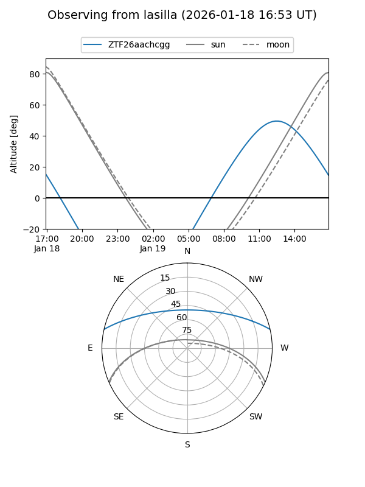
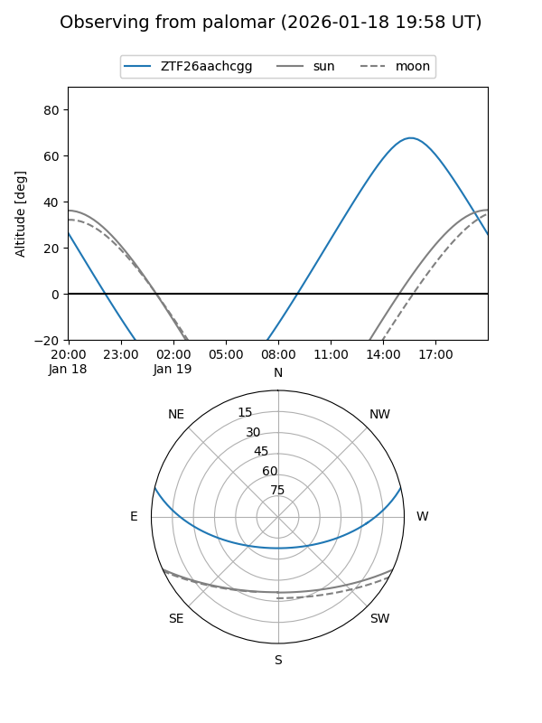

ZTF26aachcgg
Target ZTF26aachcgg at 2026-01-18 21:16
Aliases and brokers:
FINK: link
Lasair: link
ALeRCE: link
alt names
ZTF26aachcgg (ztf,fink_ztf)
Coordinates:
equatorial (ra, dec) = 235.3845,+11.21382
equatorial (HMS+DMS) = 15:41:32.28,+11:12:49.74
galactic (l, b) = (19.6458,+47.05924)
Flags:
Photometry:
last ztfg=20.13, ztfr=20.37
1 ztfg, 1 ztfr detections
Lightcurve

Visibility


Additional plots